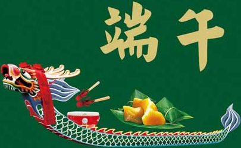

各地过端午节的习俗
端午节(Dragon Boat Festival)为每年农历五月初五，又称端阳节、午日节、五月节等。“端午节”为中国国家法定节假日之一，已并被列入世界非物质文化遗产名录。
端午节起源于中国，最初是中国人民祛病防疫的节日，吴越之地春秋之前有在农历五月初五以龙舟竞渡形式举行部落图腾祭祀的习俗;后因诗人屈原在这一天死去，便成了中国汉族人民纪念屈原的传统节日;部分地区也有纪念伍子胥、曹娥等说法。端午节还有吃粽子，喝雄黄酒，挂菖蒲、蒿草、艾叶，薰苍术、白芷，赛龙舟的习俗。在世界各地，尤其是东南亚一些其他地区，还流传有各种各样的多样化习俗。
中国
中国端午节习俗源自中国大陆南方江浙一带，各地纷纷举办各种规模的赛龙舟活动，家庭也都包粽子全家同吃，虽然不一定代表纪念屈原的意义，但这种习俗一直保留着。家人给孩子手腕缠绕五彩丝线，传说可以续命，祈盼长命多福。
自2008年开始，端午节在中国大陆地区也成为国家法定节假日之一，按规定放假一天。
香港
端午节于香港开埠初期为华人所庆祝，一般会进行进行一些应节的活动，主要是举行龙舟竞渡、使用龙舟进行祭祀仪式、游龙舟水以及吃粽子等，而于每次的龙舟赛前均会举行“放纸龙”仪式。端午节于1947年颁布《公众假期条例》(Holidays Ordinance)时未被列作公众假期，直至于1960年代修订时才加入为公众假期。现时香港不少地方均于端午节当日举办龙舟比赛以及利用龙舟祭祀还神，并会于电视直播部分赛事。
日本
由于不再采用农历，日本的端午节固定于每年阳历5月5 日，在日语中“菖蒲”和“尚武”是谐音，因此日本端午节又渐渐地变成了男孩子的节日。这一天也是日本的儿童日(男孩节)，是法定的公众假期。这一天日本有男孩子的家庭要挂鲤鱼旗，竖鲤鱼旗是希望孩子像鲤鱼那样健康成长，有中国“鲤跃龙门”的'意思。从下面看鲤鱼旗，浮现在蓝天下的鲤鱼很像在水中健壮地游。这是中国端午节没有的习惯。会食用日本粽和柏饼。
中国台湾
台湾端午节保留大量传统汉人端午礼俗，习俗为吃五子(粽子、豆子、茄子、李子、桃子)、饮雄黄酒、驱五毒、饮午时水、沐午时水、午时立蛋(传说中能在午时，立起鸡蛋可以得到好运)与划龙舟竞赛。
台湾有端午节应景俗谚曰：“食菜豆食至老老，食茄人较会超腾。”，表示端午节要吃菜豆与茄子。
朝鲜半岛
朝鲜半岛的端午节除了驱瘟之外，还是一个庆典，是祭天的时候。他们各自都把端午节本土化，并以各自的名字称呼这个庆典，例如：天中节、重午节、端阳、五月节、戌衣日、水濑日等。这些庆典，都有各自的地方特色。人们会在这天吃车轮饼糕、举行“端午茶礼”。女子会在这天跳板舞、荡秋千、用菖蒲水洗头而在江陵，传统上称呼端午节为“水濑日”(수릿날)。韩国在端午日这天在江原道江陵市所举办大规模巫教祭仪、山神祭与等一系列结合巫俗、儒道教地祝祭活动江陵端午祭，由于保留了大量的原始信仰、民俗遗风与传统文化，在2005年被列入联合国教科文组织非物质文化遗产在农业社会时期的朝鲜半岛，民众共同参与的传统祭祀活动，祈求丰收。在祭祀举行时会进行假面舞剧、韩式摔跤、荡秋千、跆拳比赛等具有朝鲜地方特色的活动。
越南
把端午节列为公众假期的地区有中华人民共和国大陆地区(于2008年开始)、香港、与澳门、日本(公历5月5日，称为“儿童之日”)及中国台湾。在中国台湾地区，端午佳节作为传统民俗节日之一，一直以来都是佳节假期，也是返乡探亲的敦谊之日。若与周六、日重叠则不另外补假，但若与周休假期仅相隔一工作日者，该工作日则调为假期，并择另一星期六补班补课。